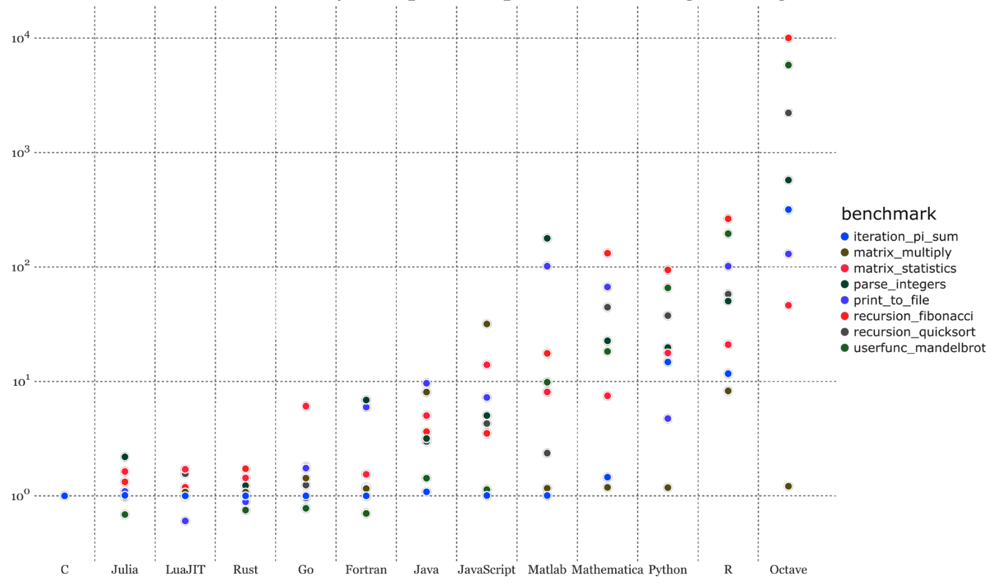
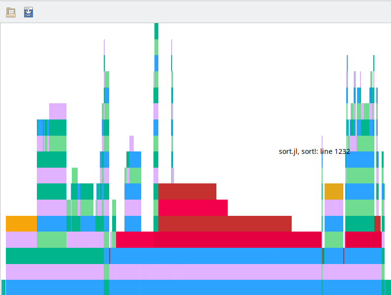

性能
性能是Julia语言发展的核心特征和基本前提。因此，理解系统中可用的各种工具和技术是很自然的，这些工具和技术有助于编写高性能的代码。
背景知识
优化的首要原则是不优化。Unix操作系统大师Kernighan和Pike在他们的开创性著作《编程实践》中提出了这一建议。一个正确工作的程序远远优于一个不正确的快速程序，这一点在二十年来没有什么变化。然而，为了确保程序的行为接近可接受的性能，需要采取许多变通方法。没有什么比绝对性能或针对所有条件进行优化的代码更好的了。在今天的标准下高性能的代码在计算能力方面与未来相对简单的应用程序相比可能要差得多。旅行者号是第一个离开太阳系的人造物体，它的计算能力远不如现代的手机。我们不必真正地手动优化每一个代码位。在大多数情况下，许多最优代码生成器和编译器编译的代码都远优于手工优化的代码。像Julia这样的现代语言利用LLVM来处理跨平台的最优代码生成，并解决了编译或代码生成过程中许多众所周知的优化问题。有人可能会问，如果硬件既便宜又容易获得，我们为什么还要费心优化代码呢？答案在于，无论硬件多么便宜，你都希望从中再挤出一些。
正确的优化级别
在单个处理器的单个线程上运行多个应用程序并不是真正的同步多任务处理。操作系统根据调度抢占任务，让处理器一次执行一个任务。用户会感觉所有的任务都在同时运行，实际上它们只是在很短的时间内执行，然后切换到下一个任务。在基于图形用户界面(GUI)的应用程序中，用户界面对用户输入的响应比其他后台任务的执行更加重要。对于在单处理器系统上运行长时间计算密集型任务的多任务应用程序，通常的做法是间歇性地处理UI事件，以保持UI的响应性。这在Windows系统中被称为空闲循环处理。在这里，最佳响应时间优先于原始执行速度。因此，纯粹的代码执行速度不是所有代码优化项目的目标。
当处理器的指令集没有三角函数时，三角函数的计算将是耗时的，因为它们是通过软件仿真来实现的。游戏程序等对性能敏感的应用程序会用以下数学方程模拟行为。
\[\sin(θ+δθ)=\sin(θ)\cos(δθ) + \cos(θ)\sin(δθ) \\[2ex] \cos(θ+δθ)=\cos(θ)\cos(δθ)-\sin(θ)\sin(δθ) \\[2ex] \lim_{δθ→ 0}\sinδθ = δθ \quad 和\quad \lim_{δθ→0}\cosδθ=1-\frac{δθ^2}{2}\]
基本上，它们会以15度或30度的间隔查找$\sinθ$和$\cosθ$的值，并使用前面给出的增量方程计算中间值。用上述方程以15度为间隔生成的表仍在相当高的精度范围内。
julia> n = 6;julia> δ = pi/180*(90/n);julia> sinδ, cosδ = δ, (1-δ*δ/2);julia> m = Matrix{Float64}(undef, (n+1, 2));julia> m[1, 1], m[1, 2] = 0.0, 1.0;julia> for i in 1:n m[i+1, 1] = m[i, 1]*cosδ + m[i, 2]*sinδ m[i+1, 2] = m[i, 2]*cosδ - m[i, 1]*sinδ endjulia> m7×2 Matrix{Float64}: 0.0 1.0 0.261799 0.965731 0.505655 0.864097 0.714547 0.702104 0.87387 0.490976 0.97246 0.245371 1.00337 -0.0176268julia> m1 = [[sin(i*δ) for i in 0:n] [cos(i*δ) for i in 0:n]]7×2 Matrix{Float64}: 0.0 1.0 0.258819 0.965926 0.5 0.866025 0.707107 0.707107 0.866025 0.5 0.965926 0.258819 1.0 6.12323e-17julia> using Statisticsjulia> mean(m1-m), std(m1-m)(0.0009570353971457324, 0.00784842483267987)
这样的粗略估计可以产生相当精确的计算，同时保持足够快的计算速度。对于指令内置了三角函的现代CPU，可能不需要这种权衡。然而，它可以说明性能与精度的权衡在优化中是很常见的。而且，它们大多是特定于领域的。
资源
云计算资源可以根据需要添加到项目或问题中。然而，资源成本显著增加了项目成本。增加硬件或处理能力可以解决更大的问题，但它们也增加了总成本。例如，如今的智能手机能够处理设备语音识别和许多涉及深度学习和神经计算的复杂计算任务，这在十年前的先进台式电脑上也是不可能的。如今智能手机的硬件比十年前的台式机更先进。因此，增加更多的资源来解决复杂问题永远不是一个解决方案，必须以最佳方式利用资源以减少费用。因此，性能管理是每个软件系统所必需的。
算法选择
计算机科学家通常把最大的精力放在完善问题的算法上。为一个问题精心选择的算法和对一个不合适的算法进行大量的调整所得到的效果是不可同日而语的。当你的代码不能正确执行时，最好看看核心设计，了解它是否有正确的算法。在设计阶段保持对性能的关注可以减少大量的返工成本。例如，二分搜索的复杂度为O(log n)，而数组搜索的复杂度为线性时间或O(n)。直觉上，二分搜索似乎总是优于线性搜索。但是，随着现代处理器缓存和数组内存管理效率的提升，使用线性搜索较小的数组可能是高效的。而二叉树是基于磁盘存储的数据库索引的选择，二叉树也可能是内存数据库数据结构的选择。数据结构的选择需要考虑完整的系统性能，而不仅仅是理论渐进时间复杂度或最坏情况下的性能。
优化策略
对整个代码库进行绝对的性能优化对任何人都没有帮助。过度优化的代码很难理解，最终可能只适合特定的平台。Julia建议编写可读的代码，并使用适当的算法，将代码生成和底层特定于目标的优化留给JIT编译器和LLVM工具集。它提供了一些工具，可以帮助分析代码并找到性能瓶颈所在。从程序员的角度来看，比起特定于平台的修复，编写通用的高级代码以保持跨平台的性能总是更受欢迎。如果优化在代码库中是必不可少的，那么最好将其本地化为一小组函数。
Julia和竞争者
大多数开始优化代码的人都在努力寻找他们的目标性能。他们能达到既定目标吗？这实际上是将你的结果与行业基准进行比较。Julia占据了评测的极端位置，即最接近C编译代码的性能。C编译代码是一个纯粹的可执行文件。C的运行环境非常轻量，因为许多操作系统是使用C语言编写的，所以它是预加载的。Julia则没有这种相较于基于C的操作系统。
Julia运行环境需要在程序第一次执行时加载，并在执行完成时退出。其次，Julia是一种即时编译语言。偶尔执行的Julia代码在调用之前可能没有被编译为本机二进制文件。在调用代码时，部分时间可能要花在将代码编译为本机格式上。为了使这两个系统处于可比较的状态，Julia的支持者建议在稳态条件下测量性能。当所有Julia代码至少运行一次，并且即时编译器将它们编译为本机二进制文件时，就达到了稳定状态。而该语言的批评者则不认同这种基准测试，因为他们认为加载时间没有被视为测试的一部分。Julia社区发布了一些竞争平台少量算法的一套微测试：

从许多任务中可以看出，Julia的性能优于竞争对手，并且与本地C语言的性能相当接近。性能优化对于任何编程语言都是一个相当复杂的话题。我们不能对性能优化的每个方面都介绍到。我们只介绍一些可以帮助我们编写优化代码的工具和指南。
基准测试
基准测试是将预期的性能与一个众所周知的目标进行比较。BenchmarkTool.jl包可以帮助开发人员度量执行Julia代码所花费的时间和分配的内存。让我们对基于查表方案的正弦函数j计算的性能进行基准测试，看看性能是否真的有所提升。我们将使用Julia BenchmarkTools.jl库提供的工具度量时间周期和内存分配。
sin(x)函数的变量x是以弧度为单位的。我们可以建立一个函数sindeg(x)其中x的单位是度数。我们将评估应该使用Julia Base中的sin(x)函数还是我们讨论过的查找表方案近似的函数。
julia> using BenchmarkTools;julia> deg2rad(x) = pi/180.0*xdeg2rad (generic function with 1 method)julia> sindeg = sin ∘ deg2radsin ∘ Main.deg2radjulia> @btime sindeg(52.0)23.193 ns (1 allocation: 16 bytes) 0.788010753606722
@benchmark将运行代码多次；通过多次采样合计性能，并报告结果的统计信息。最小时间是一个更好的估计，因为它代表最少的系统开销或噪声。@time报告函数单次调用的分配和花费的最小时间，@btime则采用多次运行函数。我们将在大多数示例中使用@btime。
julia> struct MemoLookup n lookup function MemoLookup(n) step = 90/n δ = pi/180*step lookup = [[sin(i*δ) for i in 0:n] [cos(i*δ) for i in 0:n]] new(n, lookup) end endjulia> step(m::MemoLookup) = 90/m.nstep (generic function with 1 method)julia> m = MemoLookup(6)Main.MemoLookup(6, [0.0 1.0; 0.25881904510252074 0.9659258262890683; … ; 0.9659258262890682 0.25881904510252096; 1.0 6.123233995736766e-17])julia> function sindegmemo(m::MemoLookup, x) s, lookup = step(m), m.lookup i = 1 while x >= s x -= s i += 1 end iszero(x) && return lookup[i, 1] x = deg2rad(x) sinx, cosx = x, 1 - x*x/2 return lookup[i, 1]*cosx + lookup[i, 2]*sinx endsindegmemo (generic function with 1 method)julia> @btime sindegmemo($m, 52.0)276.912 ns (14 allocations: 224 bytes) 0.788218944092369
代码比之前计算的要慢。计算需要14个分配和224个字节的额外内存。如何解释这些分配呢？小而频繁的内存块分配可能会带来显著的性能开销。
代码生成工具
这些调试工具可以在代码生成的不同阶段对代码进行分析。这些工具被命名为@code_XXX，其中xxx代表特定的阶段。Julia的代码翻译是分阶段进行的。代码被转换为抽象结构树，然后转换为LLVM代码，最后转换为本机输出。不同的宏帮助我们了解这个代码生成过程的各个阶段。Julia在内部并不使用它们来生成实际的代码。
类型稳定
在讨论函数及其返回值时，我们已经看到了一些类型稳定性的例子。我们知道，非确定性类型会导致低效的代码。让我们看一下上节提供的代码是否具有无法明确推断的类型。
julia> using InteractiveUtilsjulia> @code_warntype sindegmemo(m, 52.0)MethodInstance for Main.sindegmemo(::Main.MemoLookup, ::Float64) from sindegmemo(m::Main.MemoLookup, x) in Main at REPL[4]:1 Arguments #self#::Core.Const(Main.sindegmemo) m::Main.MemoLookup x@_3::Float64 Locals cosx::ANY sinx::ANY i::Int64 lookup::ANY s::ANY x@_9::ANY Body::ANY 1 ─ (x@_9 = x@_3) │ Core.NewvarNode(:(cosx)) │ Core.NewvarNode(:(sinx)) │ %4 = Main.step(m)::ANY │ %5 = Base.getproperty(m, :lookup)::ANY │ (s = %4) │ (lookup = %5) └── (i = 1) 2 ┄ %9 = (x@_9 >= s)::ANY └── goto #4 if not %9 3 ─ (x@_9 = x@_9 - s) │ (i = i + 1) └── goto #2 4 ─ %14 = Main.iszero(x@_9)::ANY └── goto #6 if not %14 5 ─ %16 = Base.getindex(lookup, i, 1)::ANY └── return %16 6 ─ (x@_9 = Main.deg2rad(x@_9)) │ (sinx = x@_9) │ %20 = (x@_9 * x@_9)::ANY │ %21 = (%20 / 2)::ANY │ %22 = (1 - %21)::ANY │ (cosx = %22) │ %24 = Base.getindex(lookup, i, 1)::ANY │ %25 = (%24 * cosx)::ANY │ %26 = Base.getindex(lookup, i, 2)::ANY │ %27 = (%26 * sinx)::ANY │ %28 = (%25 + %27)::ANY └── return %28
@code_warntype将Julia代码转换为一个AST。AST在每一步都返回类型推断。非确定性类型在终端或Jupyter控制台中用颜色突出显示。有许多变量被赋给Any类型。这本质上意味着在任何计算过程中都将分配内存位置和间接指向实际的Float64值。
我们将引入一个新的Memolooup，它为n和lookup等属性正确定义了类型。
julia> using InteractiveUtilsjulia> struct MemoLookup n::Int lookup::Matrix{Float64} function MemoLookup(n) step = 90/n δ = pi/180*step lookup = [[sin(i*δ) for i in 0:n] [cos(i*δ) for i in 0:n]] new(n, lookup) end endjulia> step(m::MemoLookup) = 90/m.nstep (generic function with 1 method)julia> m = MemoLookup(6)Main.MemoLookup(6, [0.0 1.0; 0.25881904510252074 0.9659258262890683; … ; 0.9659258262890682 0.25881904510252096; 1.0 6.123233995736766e-17])julia> function sindegmemo(m::MemoLookup, x) s, lookup = step(m), m.lookup i = 1 while x >= s x -= s i += 1 end iszero(x) && return lookup[i, 1] x = deg2rad(x) sinx, cosx = x, 1 - x*x/2 return lookup[i, 1]*cosx + lookup[i, 2]*sinx endsindegmemo (generic function with 1 method)julia> @code_warntype sindegmemo(m, 52.0)MethodInstance for Main.sindegmemo(::Main.MemoLookup, ::Float64) from sindegmemo(m::Main.MemoLookup, x) in Main at REPL[5]:1 Arguments #self#::Core.Const(Main.sindegmemo) m::Main.MemoLookup x@_3::Float64 Locals cosx::Float64 sinx::Float64 i::Int64 lookup::Matrix{Float64} s::Float64 x@_9::Float64 Body::Float64 1 ─ (x@_9 = x@_3) │ Core.NewvarNode(:(cosx)) │ Core.NewvarNode(:(sinx)) │ %4 = Main.step(m)::Float64 │ %5 = Base.getproperty(m, :lookup)::Matrix{Float64} │ (s = %4) │ (lookup = %5) └── (i = 1) 2 ┄ %9 = (x@_9 >= s)::Bool └── goto #4 if not %9 3 ─ (x@_9 = x@_9 - s) │ (i = i + 1) └── goto #2 4 ─ %14 = Main.iszero(x@_9)::Bool └── goto #6 if not %14 5 ─ %16 = Base.getindex(lookup, i, 1)::Float64 └── return %16 6 ─ (x@_9 = Main.deg2rad(x@_9)) │ (sinx = x@_9) │ %20 = (x@_9 * x@_9)::Float64 │ %21 = (%20 / 2)::Float64 │ %22 = (1 - %21)::Float64 │ (cosx = %22) │ %24 = Base.getindex(lookup, i, 1)::Float64 │ %25 = (%24 * cosx)::Float64 │ %26 = Base.getindex(lookup, i, 2)::Float64 │ %27 = (%26 * sinx)::Float64 │ %28 = (%25 + %27)::Float64 └── return %28
没有变量被指定为Any类型。让我们看看这是否能提高性能。
julia> using BenchmarkToolsjulia> @btime sindegmemo($m, 52.0)4.900 ns (0 allocations: 0 bytes) 0.788218944092369
性能有显著提高：从276ns提高到4ns。但是，如果你还记得我们写的sindeg(x)函数的执行时间是18ns。sindeg(x)的构造正确吗？
非必要的分配
一个方法是查看函数调用的@code_warntype转储。
julia> @code_warntype sindeg(52.0)MethodInstance for (::ComposedFunction{typeof(sin), typeof(Main.deg2rad)})(::Float64) from (c::ComposedFunction)(x...; kw...) in Base at operators.jl:1085 Arguments c::Core.Const(sin ∘ Main.deg2rad) x::Tuple{Float64} Body::Float64 1 ─ %1 = Core.NamedTuple()::Core.Const(NamedTuple()) │ %2 = Base.pairs(%1)::Core.Const(Base.Pairs{Symbol, Union{}, Tuple{}, NamedTuple{(), Tuple{}}}()) │ %3 = Core.tuple(%2, c)::Core.Const((Base.Pairs{Symbol, Union{}, Tuple{}, NamedTuple{(), Tuple{}}}(), sin ∘ Main.deg2rad)) │ %4 = Core._apply_iterate(Base.iterate, Base.:(var"#_#83"), %3, x)::Float64 └── return %4
虽然就类型推断而言，代码中没有问题(没有Any类型)，但x被赋值为一个Tuple{Float64}。这本质上意味着将创建一个新变量，并将函数输入赋值给这个新创建的元组。如果我们重新定义sindeg函数为：
julia> sindeg1(x) = sin(deg2rad(x))sindeg1 (generic function with 1 method)julia> @btime sindeg1(52.0)0.020 ns (0 allocations: 0 bytes) 0.788010753606722julia> @btime sind(52.0)0.020 ns (0 allocations: 0 bytes) 0.788010753606722
这与Julia函数sind(x)的性能已经一致。
参数数据类型
参数数据类型可以提高性能，因为它们是在代码编译期间而不是在运行时解析的。挑战在于如何识别这些属性。例如，在MemoLookup类型中，表示表大小的属性n是一个常量，没有很多地参与到查找表的构造中。因此，它是作为类型参数的一个理想候选者。
julia> struct MemoLookupP{N} lookup::Matrix{Float64} function MemoLookupP{N}() where N δ = pi/2N lookup = [[sin(i*δ) for i in 0:N] [cos(i*δ) for i in 0:N]] new{N}(lookup) end endjulia> step(m::MemoLookupP{N}) where N = 90.0/Nstep (generic function with 1 method)julia> const m = MemoLookupP{6}()Main.MemoLookupP{6}([0.0 1.0; 0.25881904510252074 0.9659258262890683; … ; 0.9659258262890682 0.25881904510252096; 1.0 6.123233995736766e-17])
我们定义了另一个singindegmemo函数，它接受MemoLookupP作为输入。
julia> using BenchmarkToolsjulia> function sindegmemo(m::MemoLookupP, x::Float64) s, lookup = step(m), m.lookup i = 1 while x >= s x -= s i += 1 end x, sini = deg2rad(x), lookup[i, 1] iszero(x) && return sini sinx, cosx, cosi = x, 1 - x*x/2, lookup[i, 2] return sini*cosx + cosi*sinx endsindegmemo (generic function with 1 method)julia> @btime sindegmemo(m, 52.0)1.730 ns (0 allocations: 0 bytes) 0.788218944092369
从4ns到1.73ns是一个进步，但是我们能做得更好，让我们看一下生成的LLVM位码。
删除非必要代码
由LLVM生成的位码非常具有描述性并需要对代码助记符有很好的理解。但是，我们将只确定一些明显的问题，而不进行详细的分析：
julia> using InteractiveUtilsjulia> @code_llvm sindegmemo(m, 52.0); @ REPL[2]:1 within `sindegmemo` define double @julia_sindegmemo_17906([1 x {}*]* nocapture nonnull readonly align 8 dereferenceable(8) %0, double %1) #0 { top: ; @ REPL[2]:2 within `sindegmemo` ; ┌ @ Base.jl:42 within `getproperty` %2 = getelementptr inbounds [1 x {}*], [1 x {}*]* %0, i64 0, i64 0 %3 = load atomic {}*, {}** %2 unordered, align 8 ; └ ; @ REPL[2]:4 within `sindegmemo` ; ┌ @ operators.jl:425 within `>=` ; │┌ @ float.jl:447 within `<=` %4 = fcmp ult double %1, 1.500000e+01 ; └└ br i1 %4, label %L9, label %L6 L6: ; preds = %L6, %top %value_phi17 = phi double [ %5, %L6 ], [ %1, %top ] %value_phi6 = phi i64 [ %6, %L6 ], [ 1, %top ] ; @ REPL[2]:5 within `sindegmemo` ; ┌ @ float.jl:402 within `-` %5 = fadd double %value_phi17, -1.500000e+01 ; └ ; @ REPL[2]:6 within `sindegmemo` ; ┌ @ int.jl:87 within `+` %6 = add i64 %value_phi6, 1 ; └ ; @ REPL[2]:4 within `sindegmemo` ; ┌ @ operators.jl:425 within `>=` ; │┌ @ float.jl:447 within `<=` %7 = fcmp ult double %5, 1.500000e+01 ; └└ br i1 %7, label %L9, label %L6 L9: ; preds = %L6, %top %value_phi.lcssa = phi i64 [ 1, %top ], [ %6, %L6 ] %value_phi1.lcssa = phi double [ %1, %top ], [ %5, %L6 ] ; @ REPL[2]:8 within `sindegmemo` ; ┌ @ math.jl:309 within `deg2rad` ; │┌ @ float.jl:405 within `*` %8 = fmul double %value_phi1.lcssa, 0x3F91DF46A2529D39 ; └└ ; ┌ @ array.jl:862 within `getindex` %9 = add i64 %value_phi.lcssa, -1 %10 = bitcast {}* %3 to {}** %11 = getelementptr inbounds {}*, {}** %10, i64 3 %12 = bitcast {}** %11 to i64* %13 = load i64, i64* %12, align 8 %14 = icmp ult i64 %9, %13 br i1 %14, label %ib, label %oob common.ret: ; preds = %idxend4, %idxend %common.ret.op = phi double [ %36, %idxend4 ], [ %23, %idxend ] ; └ ; @ REPL[2] within `sindegmemo` ret double %common.ret.op ib: ; preds = %L9 ; @ REPL[2]:8 within `sindegmemo` ; ┌ @ array.jl:862 within `getindex` %15 = getelementptr inbounds {}*, {}** %10, i64 4 %16 = bitcast {}** %15 to i64* %17 = load i64, i64* %16, align 8 %.not = icmp eq i64 %17, 0 br i1 %.not, label %oob, label %idxend oob: ; preds = %ib, %L9 %18 = alloca [2 x i64], align 8 %.sub = getelementptr inbounds [2 x i64], [2 x i64]* %18, i64 0, i64 0 store i64 %value_phi.lcssa, i64* %.sub, align 8 %19 = getelementptr inbounds [2 x i64], [2 x i64]* %18, i64 0, i64 1 store i64 1, i64* %19, align 8 call void @jl_bounds_error_ints({}* %3, i64* nonnull %.sub, i64 2) unreachable idxend: ; preds = %ib %20 = bitcast {}* %3 to double** %21 = load double*, double** %20, align 8 %22 = getelementptr inbounds double, double* %21, i64 %9 %23 = load double, double* %22, align 8 ; └ ; @ REPL[2]:9 within `sindegmemo` ; ┌ @ number.jl:42 within `iszero` ; │┌ @ float.jl:438 within `==` %24 = fcmp une double %8, 0.000000e+00 ; └└ br i1 %24, label %ib2, label %common.ret ib2: ; preds = %idxend ; @ REPL[2]:10 within `sindegmemo` ; ┌ @ array.jl:862 within `getindex` %25 = icmp ugt i64 %17, 1 br i1 %25, label %idxend4, label %oob3 oob3: ; preds = %ib2 %26 = alloca [2 x i64], align 8 %.sub5 = getelementptr inbounds [2 x i64], [2 x i64]* %26, i64 0, i64 0 store i64 %value_phi.lcssa, i64* %.sub5, align 8 %27 = getelementptr inbounds [2 x i64], [2 x i64]* %26, i64 0, i64 1 store i64 2, i64* %27, align 8 call void @jl_bounds_error_ints({}* %3, i64* nonnull %.sub5, i64 2) unreachable idxend4: ; preds = %ib2 ; └ ; ┌ @ float.jl:405 within `*` %28 = fmul double %8, %8 ; └ ; ┌ @ promotion.jl:382 within `/` @ float.jl:408 %29 = fmul double %28, 5.000000e-01 ; └ ; ┌ @ promotion.jl:381 within `-` @ float.jl:402 %30 = fsub double 1.000000e+00, %29 ; └ ; ┌ @ array.jl:862 within `getindex` %31 = add nuw i64 %13, %9 %32 = getelementptr inbounds double, double* %21, i64 %31 %33 = load double, double* %32, align 8 ; └ ; @ REPL[2]:11 within `sindegmemo` ; ┌ @ float.jl:405 within `*` %34 = fmul double %30, %23 %35 = fmul double %8, %33 ; └ ; ┌ @ float.jl:399 within `+` %36 = fadd double %34, %35 br label %common.ret ; └ }
每当使用getindex方法访问数组时，都会检查边界。当数组在范围内时执行ib标签，当索引超出边界时执行oob标签。如果我们可以确定索引在边界内，则边界外的部分可以被消除。你可以使用宏@inbounds来确保不会生成边界检查代码。
julia> function sindegmemoib(m::MemoLookupP, x) s, lookup = step(m), m.lookup i = 1 while x >= s x -= s i += 1 end x, sini = deg2rad(x), @inbounds lookup[i, 1] iszero(x) && return sini sinx, cosx, cosi = x, 1 - x*x/2, @inbounds lookup[i, 2] return sini*cosx + cosi*sinx endsindegmemoib (generic function with 1 method)julia> @btime sindegmemoib($m, 60.0)1.230 ns (0 allocations: 0 bytes) 0.8660254037844386julia> @btime sindegmemoib($m, 22.0)1.480 ns (0 allocations: 0 bytes) 0.3748975477461437
我们已经进一步接近sind(x)的性能，但还不够。一个明显的问题是，为什么sindegmemoib在输入为60°时比输入为22°时性能更好？
分析
在我们分析过的示例中，我们知道某个特定函数有一个我们希望克服的性能瓶颈。在许多大型应用中，不太容易获取这样的信息。例如，一个文字处理器打开文件和在屏幕上呈现内容的速度很慢。可能有很多因素。读取文件可能会很慢，文档中的某些功能计算起来很复杂，或者文件太大，读取所有数据和在内存中缓存数据可能会成为瓶颈。分析可以帮助你识别这些场景。在一个固定的时间间隔(比如每毫秒)，统计分析器将查看代码执行堆栈，并记录堆栈的状态，比如行号和查询期间执行的函数。一旦运行完成，它们将关联所有这些数据，并报告遇到某个特定函数的次数，以及为实现这个该函数而调用的所有函数的反向跟踪。
Julia有一个内置的统计分析器。分析器位于Profile模块中。我们将使用这个工具来分析一个函数profile_test。
julia> using Profilejulia> function profile_test(n) for i in 1:n A = randn(100,100,20) m = maximum(A) Am = mapslices(sum, A; dims=2) B = A[:,:,5] Bsort = mapslices(sort, B; dims=1) b = rand(100) C = B .* b end endprofile_test (generic function with 1 method)julia> profile_test(1)
代码运行一次，以便对其进行编译，而用于此类活动的时间不会被捕获为分析器采样的一部分。现在，我们运行该函数100次迭代，并对运行进行分析。
julia> @profile profile_test(100)
数据是由分析器生成和缓存的，并且可以通过Profile.print()调用打印出来。
julia> Profile.print()Overhead ╎ [+additional indent] Count File:Line; Function ========================================================= ╎2094 @Base/client.jl:451; include(fname::String) ╎ 2094 ...r/src/Documenter.jl:260; (::Documenter.var"#makedocs##k... ╎ 2094 ...r/src/Documenter.jl:265; #makedocs#1 ╎ 2094 @Base/file.jl:110; cd(f::Documenter.var"#2#3"{Do... ╎ 2094 .../src/Documenter.jl:266; #2 ╎ 2094 ...ties/Selectors.jl:170; dispatch(#unused#::Type{Docu... ╎ ╎ 2094 ...er/src/Builder.jl:226; runner(#unused#::Type{Docum... ╎ ╎ 2094 .../src/Expanders.jl:42; expand(doc::Documenter.Docu... ╎ ╎ 2094 ...ies/Selectors.jl:170; dispatch(::Type{Documenter... ╎ ╎ 2094 ...src/Expanders.jl:665; runner(#unused#::Type{Doc... ╎ ╎ 2094 ...src/IOCapture.jl:75; (::IOCapture.var"#capture... ╎ ╎ ╎ 2094 ...rc/IOCapture.jl:116; capture(f::Documenter.Ex... ╎ ╎ ╎ 2094 @Base/logging.jl:623; with_logger ╎ ╎ ╎ 2094 ...c/IOCapture.jl:118; (::IOCapture.var"#3#5"{... ╎ ╎ ╎ 2094 ...c/Expanders.jl:666; (::Documenter.Expander... ╎ ╎ ╎ 2094 @Base/file.jl:110; cd(f::Documenter.Expan... ╎ ╎ ╎ ╎ 2094 .../Expanders.jl:667; #20 2╎ ╎ ╎ ╎ 2094 @Base/boot.jl:373; eval ╎ ╎ ╎ ╎ 463 REPL[2]:3; profile_test(n::Int64) ╎ ╎ ╎ ╎ 463 ...rc/normal.jl:244; randn ╎ ╎ ╎ ╎ 463 ...c/normal.jl:238; randn ╎ ╎ ╎ ╎ ╎ 56 @Base/boot.jl:473; Array 56╎ ╎ ╎ ╎ ╎ 56 @Base/boot.jl:461; Array ╎ ╎ ╎ ╎ ╎ 174 ...c/normal.jl:223; randn!(rng::Random... ╎ ╎ ╎ ╎ ╎ 174 ...c/Random.jl:268; rand! ╎ ╎ ╎ ╎ ╎ 174 .../Random.jl:268; rand! ╎ ╎ ╎ ╎ ╎ 174 ...iroSimd.jl:298; rand! ╎ ╎ ╎ ╎ ╎ 174 ...roSimd.jl:140; xoshiro_bulk ╎ ╎ ╎ ╎ ╎ ╎ 174 ...roSimd.jl:141; xoshiro_bulk ╎ ╎ ╎ ╎ ╎ ╎ 6 ...roSimd.jl:247; xoshiro_bulk_si... 6╎ ╎ ╎ ╎ ╎ ╎ 6 @Base/int.jl:477; <= ╎ ╎ ╎ ╎ ╎ ╎ 12 ...roSimd.jl:248; xoshiro_bulk_si... 12╎ ╎ ╎ ╎ ╎ ╎ 12 ...roSimd.jl:57; _rotl23 ╎ ╎ ╎ ╎ ╎ ╎ 4 ...roSimd.jl:251; xoshiro_bulk_si... 4╎ ╎ ╎ ╎ ╎ ╎ 4 ...roSimd.jl:76; _xor ╎ ╎ ╎ ╎ ╎ ╎ 16 ...roSimd.jl:252; xoshiro_bulk_si... 16╎ ╎ ╎ ╎ ╎ ╎ 16 ...roSimd.jl:76; _xor ╎ ╎ ╎ ╎ ╎ ╎ 4 ...roSimd.jl:254; xoshiro_bulk_si... 4╎ ╎ ╎ ╎ ╎ ╎ 4 ...roSimd.jl:76; _xor ╎ ╎ ╎ ╎ ╎ ╎ 20 ...roSimd.jl:255; xoshiro_bulk_si... 20╎ ╎ ╎ ╎ ╎ ╎ 20 ...roSimd.jl:54; _rotl45 ╎ ╎ ╎ ╎ ╎ ╎ 112 ...roSimd.jl:256; xoshiro_bulk_si... ╎ ╎ ╎ ╎ ╎ ╎ 112 ...ointer.jl:118; unsafe_store! 112╎ ╎ ╎ ╎ ╎ ╎ 112 ...ointer.jl:118; unsafe_store! 5╎ ╎ ╎ ╎ ╎ 233 ...c/normal.jl:226; randn!(rng::Random... ╎ ╎ ╎ ╎ ╎ 45 @Base/range.jl:837; iterate 45╎ ╎ ╎ ╎ ╎ 45 ...omotion.jl:468; == ╎ ╎ ╎ ╎ ╎ 5 ...c/normal.jl:61; _randn ╎ ╎ ╎ ╎ ╎ 5 @Base/int.jl:497; >> 5╎ ╎ ╎ ╎ ╎ 5 @Base/int.jl:491; >> 7╎ ╎ ╎ ╎ ╎ 50 ...c/normal.jl:63; _randn 1╎ ╎ ╎ ╎ ╎ 1 ...e/array.jl:861; getindex 1╎ ╎ ╎ ╎ ╎ 1 @Base/int.jl:85; - ╎ ╎ ╎ ╎ ╎ 26 @Base/int.jl:581; rem ╎ ╎ ╎ ╎ ╎ 26 ...erators.jl:278; != 26╎ ╎ ╎ ╎ ╎ 26 @Base/bool.jl:35; ! ╎ ╎ ╎ ╎ ╎ 15 ...omotion.jl:380; * 11╎ ╎ ╎ ╎ ╎ 11 ...e/float.jl:405; * ╎ ╎ ╎ ╎ ╎ 4 ...omotion.jl:350; promote ╎ ╎ ╎ ╎ ╎ 4 ...motion.jl:327; _promote ╎ ╎ ╎ ╎ ╎ ╎ 4 .../number.jl:7; convert 4╎ ╎ ╎ ╎ ╎ ╎ 4 .../float.jl:146; Float64 2╎ ╎ ╎ ╎ ╎ 52 ...c/normal.jl:64; _randn ╎ ╎ ╎ ╎ ╎ 50 @Base/int.jl:482; < 50╎ ╎ ╎ ╎ ╎ 50 @Base/int.jl:476; < ╎ ╎ ╎ ╎ ╎ 76 ...c/normal.jl:65; _randn 7╎ ╎ ╎ ╎ ╎ 7 @Base/float.jl:0; randn_unlikely(rng... 5╎ ╎ ╎ ╎ ╎ 5 ...c/normal.jl:70; randn_unlikely(rng... ╎ ╎ ╎ ╎ ╎ 5 ...c/normal.jl:71; randn_unlikely(rng... 5╎ ╎ ╎ ╎ ╎ 5 ...omotion.jl:468; == ╎ ╎ ╎ ╎ ╎ 47 ...c/normal.jl:78; randn_unlikely(rng... 2╎ ╎ ╎ ╎ ╎ 2 ...e/float.jl:405; * 4╎ ╎ ╎ ╎ ╎ 4 ...e/float.jl:399; + 9╎ ╎ ╎ ╎ ╎ 9 ...e/float.jl:444; < ╎ ╎ ╎ ╎ ╎ 4 ...erators.jl:655; * 4╎ ╎ ╎ ╎ ╎ 4 .../float.jl:405; * ╎ ╎ ╎ ╎ ╎ 22 ...ial/exp.jl:296; exp(x::Float64) ╎ ╎ ╎ ╎ ╎ 1 ...al/exp.jl:212; exp_impl ╎ ╎ ╎ ╎ ╎ ╎ 1 ...al/exp.jl:178; table_unpack 1╎ ╎ ╎ ╎ ╎ ╎ 1 ...ntials.jl:443; reinterpret ╎ ╎ ╎ ╎ ╎ 15 ...al/exp.jl:213; exp_impl 2╎ ╎ ╎ ╎ ╎ ╎ 2 .../float.jl:412; muladd ╎ ╎ ╎ ╎ ╎ ╎ 13 ...al/exp.jl:76; expm1b_kernel ╎ ╎ ╎ ╎ ╎ ╎ 13 ...e/math.jl:152; evalpoly ╎ ╎ ╎ ╎ ╎ ╎ 13 ...e/math.jl:153; macro expansion 13╎ ╎ ╎ ╎ ╎ ╎ 13 .../float.jl:412; muladd ╎ ╎ ╎ ╎ ╎ 1 ...al/exp.jl:215; exp_impl 1╎ ╎ ╎ ╎ ╎ ╎ 1 .../float.jl:524; abs ╎ ╎ ╎ ╎ ╎ 3 ...al/exp.jl:225; exp_impl ╎ ╎ ╎ ╎ ╎ ╎ 3 @Base/int.jl:499; << 3╎ ╎ ╎ ╎ ╎ ╎ 3 @Base/int.jl:492; << ╎ ╎ ╎ ╎ ╎ 2 ...al/exp.jl:226; exp_impl 2╎ ╎ ╎ ╎ ╎ ╎ 2 ...ntials.jl:443; reinterpret ╎ ╎ ╎ ╎ ╎ 6 .../Random.jl:257; rand ╎ ╎ ╎ ╎ ╎ 6 ...Random.jl:257; rand ╎ ╎ ╎ ╎ ╎ ╎ 6 ...oshiro.jl:185; rand 1╎ ╎ ╎ ╎ ╎ ╎ 1 .../float.jl:405; * ╎ ╎ ╎ ╎ ╎ ╎ 5 ...Random.jl:257; rand ╎ ╎ ╎ ╎ ╎ ╎ 3 ...oshiro.jl:102; rand 3╎ ╎ ╎ ╎ ╎ ╎ 3 ...e/task.jl:170; getproperty ╎ ╎ ╎ ╎ ╎ ╎ 1 ...oshiro.jl:104; rand 1╎ ╎ ╎ ╎ ╎ ╎ 1 @Base/int.jl:361; | ╎ ╎ ╎ ╎ ╎ ╎ 1 ...oshiro.jl:109; rand 1╎ ╎ ╎ ╎ ╎ ╎ 1 @Base/int.jl:362; xor 3╎ ╎ ╎ ╎ ╎ 12 ...c/normal.jl:81; randn_unlikely(rng... 2╎ ╎ ╎ ╎ ╎ 2 .../normal.jl:38; randn(rng::Random... ╎ ╎ ╎ ╎ ╎ 2 .../normal.jl:47; randn(rng::Random... ╎ ╎ ╎ ╎ ╎ 2 ...Random.jl:254; rand ╎ ╎ ╎ ╎ ╎ ╎ 2 ...oshiro.jl:176; rand ╎ ╎ ╎ ╎ ╎ ╎ 2 ...Random.jl:257; rand ╎ ╎ ╎ ╎ ╎ ╎ 2 ...oshiro.jl:102; rand 2╎ ╎ ╎ ╎ ╎ ╎ 2 ...e/task.jl:170; getproperty ╎ ╎ ╎ ╎ ╎ 3 .../normal.jl:52; randn(rng::Random... ╎ ╎ ╎ ╎ ╎ 3 ...motion.jl:380; * ╎ ╎ ╎ ╎ ╎ ╎ 3 ...motion.jl:350; promote ╎ ╎ ╎ ╎ ╎ ╎ 3 ...motion.jl:327; _promote ╎ ╎ ╎ ╎ ╎ ╎ 3 ...number.jl:7; convert 3╎ ╎ ╎ ╎ ╎ ╎ 3 .../float.jl:146; Float64 ╎ ╎ ╎ ╎ ╎ 2 .../normal.jl:53; randn(rng::Random... ╎ ╎ ╎ ╎ ╎ 2 @Base/int.jl:482; < 2╎ ╎ ╎ ╎ ╎ ╎ 2 @Base/int.jl:476; < ╎ ╎ ╎ ╎ 42 REPL[2]:4; profile_test(n::Int64) ╎ ╎ ╎ ╎ 42 ...reducedim.jl:889; maximum ╎ ╎ ╎ ╎ 42 ...educedim.jl:889; #maximum#740 ╎ ╎ ╎ ╎ ╎ 42 ...educedim.jl:893; _maximum ╎ ╎ ╎ ╎ ╎ 42 ...educedim.jl:893; #_maximum#742 ╎ ╎ ╎ ╎ ╎ 42 ...ducedim.jl:894; _maximum ╎ ╎ ╎ ╎ ╎ 42 ...ducedim.jl:894; #_maximum#743 ╎ ╎ ╎ ╎ ╎ 42 ...ucedim.jl:322; mapreduce ╎ ╎ ╎ ╎ ╎ ╎ 42 ...ucedim.jl:322; #mapreduce#725 ╎ ╎ ╎ ╎ ╎ ╎ 42 ...ucedim.jl:330; _mapreduce_dim ╎ ╎ ╎ ╎ ╎ ╎ 42 ...reduce.jl:417; _mapreduce(f::t... 1╎ ╎ ╎ ╎ ╎ ╎ 1 ...reduce.jl:621; mapreduce_impl(... ╎ ╎ ╎ ╎ ╎ ╎ 1 ...reduce.jl:625; mapreduce_impl(... ╎ ╎ ╎ ╎ ╎ ╎ 1 .../range.jl:22; Colon ╎ ╎ ╎ ╎ ╎ ╎ ╎ 1 .../range.jl:24; _colon ╎ ╎ ╎ ╎ ╎ ╎ ╎ 1 .../range.jl:330; StepRange 1╎ ╎ ╎ ╎ ╎ ╎ ╎ 1 .../range.jl:275; StepRange ╎ ╎ ╎ ╎ ╎ ╎ 19 ...reduce.jl:626; mapreduce_impl(... ╎ ╎ ╎ ╎ ╎ ╎ 19 ...reduce.jl:594; _fast ╎ ╎ ╎ ╎ ╎ ╎ ╎ 19 .../float.jl:534; isnan 19╎ ╎ ╎ ╎ ╎ ╎ ╎ 19 .../float.jl:441; != ╎ ╎ ╎ ╎ ╎ ╎ 21 ...reduce.jl:629; mapreduce_impl(... ╎ ╎ ╎ ╎ ╎ ╎ 21 .../range.jl:837; iterate 21╎ ╎ ╎ ╎ ╎ ╎ ╎ 21 ...motion.jl:468; == ╎ ╎ ╎ ╎ 1380 REPL[2]:5; profile_test(n::Int64) 8╎ ╎ ╎ ╎ 1380 ...actarray.jl:2749; mapslices##kw ╎ ╎ ╎ ╎ 1 ...actarray.jl:2760; mapslices(f::typeo... ╎ ╎ ╎ ╎ ╎ 1 @Base/array.jl:2637; setdiff ╎ ╎ ╎ ╎ ╎ 1 ...e/array.jl:2633; _shrink(shrinker!... ╎ ╎ ╎ ╎ ╎ 1 ...e/array.jl:2628; vectorfilter(f::... ╎ ╎ ╎ ╎ ╎ 1 .../array.jl:2481; filter(f::Base.v... 1╎ ╎ ╎ ╎ ╎ 1 ...e/boot.jl:457; Array ╎ ╎ ╎ ╎ 1 ...actarray.jl:2785; mapslices(f::typeo... ╎ ╎ ╎ ╎ ╎ 1 ...educedim.jl:15; reduced_indices(a::... 1╎ ╎ ╎ ╎ ╎ 1 ...educedim.jl:57; reduced_indices(in... ╎ ╎ ╎ ╎ 2 ...actarray.jl:2795; mapslices(f::typeo... ╎ ╎ ╎ ╎ ╎ 2 ...actarray.jl:783; similar(a::Vector{... ╎ ╎ ╎ ╎ ╎ 2 @Base/array.jl:378; similar ╎ ╎ ╎ ╎ ╎ 2 @Base/boot.jl:468; Array 2╎ ╎ ╎ ╎ ╎ 2 @Base/boot.jl:461; Array 1╎ ╎ ╎ ╎ 1 ...actarray.jl:2799; mapslices(f::typeo... ╎ ╎ ╎ ╎ 1 ...actarray.jl:2802; mapslices(f::typeo... 1╎ ╎ ╎ ╎ ╎ 1 ...actarray.jl:2836; concatenate_setind... 1╎ ╎ ╎ ╎ 1366 ...actarray.jl:2806; mapslices(f::typeo... ╎ ╎ ╎ ╎ ╎ 17 ...actarray.jl:2814; inner_mapslices!(s... ╎ ╎ ╎ ╎ ╎ 17 ...ctarray.jl:2831; replace_tuples! 5╎ ╎ ╎ ╎ ╎ 5 ...e/array.jl:861; getindex 11╎ ╎ ╎ ╎ ╎ 11 ...entials.jl:479; setindex! 1╎ ╎ ╎ ╎ ╎ 1 ...e/range.jl:837; iterate 89╎ ╎ ╎ ╎ ╎ 210 ...actarray.jl:2815; inner_mapslices!(s... ╎ ╎ ╎ ╎ ╎ 121 ...ensional.jl:875; _unsafe_getindex!(... 1╎ ╎ ╎ ╎ ╎ 1 ...nsional.jl:0; macro expansion ╎ ╎ ╎ ╎ ╎ 120 ...nsional.jl:862; macro expansion ╎ ╎ ╎ ╎ ╎ 112 ...rtesian.jl:64; macro expansion 13╎ ╎ ╎ ╎ ╎ 13 ...sional.jl:865; macro expansion ╎ ╎ ╎ ╎ ╎ 10 ...sional.jl:867; macro expansion 10╎ ╎ ╎ ╎ ╎ ╎ 10 .../array.jl:903; setindex! ╎ ╎ ╎ ╎ ╎ 89 ...sional.jl:868; macro expansion 39╎ ╎ ╎ ╎ ╎ ╎ 89 .../range.jl:837; iterate 49╎ ╎ ╎ ╎ ╎ ╎ 50 ...motion.jl:468; == ╎ ╎ ╎ ╎ ╎ 8 ...rtesian.jl:65; macro expansion ╎ ╎ ╎ ╎ ╎ 8 ...ndices.jl:367; iterate ╎ ╎ ╎ ╎ ╎ ╎ 8 .../range.jl:837; iterate 8╎ ╎ ╎ ╎ ╎ ╎ 8 ...motion.jl:468; == 174╎ ╎ ╎ ╎ ╎ 1138 ...actarray.jl:2816; inner_mapslices!(s... 516╎ ╎ ╎ ╎ ╎ 940 ...ctarray.jl:2835; concatenate_setin... 48╎ ╎ ╎ ╎ ╎ 420 ...oadcast.jl:1200; dotview(::Array{... 362╎ ╎ ╎ ╎ ╎ 372 ...e/views.jl:146; maybeview(::Arra... ╎ ╎ ╎ ╎ ╎ 7 ...barray.jl:177; view(::Array{Flo... 3╎ ╎ ╎ ╎ ╎ ╎ 3 ...tarray.jl:654; checkbounds 2╎ ╎ ╎ ╎ ╎ ╎ 4 ...tarray.jl:656; checkbounds ╎ ╎ ╎ ╎ ╎ ╎ 2 ...tarray.jl:635; checkbounds ╎ ╎ ╎ ╎ ╎ ╎ 1 ...tarray.jl:95; axes ╎ ╎ ╎ ╎ ╎ ╎ 1 .../array.jl:153; size ╎ ╎ ╎ ╎ ╎ ╎ 1 ...ntuple.jl:50; ntuple ╎ ╎ ╎ ╎ ╎ ╎ ╎ 1 .../array.jl:153; #93 1╎ ╎ ╎ ╎ ╎ ╎ ╎ 1 .../array.jl:150; size ╎ ╎ ╎ ╎ ╎ ╎ 1 ...tarray.jl:682; checkbounds_ind... ╎ ╎ ╎ ╎ ╎ ╎ 1 ...tarray.jl:682; checkbounds_ind... ╎ ╎ ╎ ╎ ╎ ╎ 1 ...tarray.jl:720; checkindex ╎ ╎ ╎ ╎ ╎ ╎ ╎ 1 .../range.jl:609; isempty ╎ ╎ ╎ ╎ ╎ ╎ ╎ 1 ...rators.jl:378; > 1╎ ╎ ╎ ╎ ╎ ╎ ╎ 1 @Base/int.jl:83; < 2╎ ╎ ╎ ╎ ╎ 3 ...barray.jl:178; view(::Array{Flo... ╎ ╎ ╎ ╎ ╎ ╎ 1 ...barray.jl:209; unsafe_view ╎ ╎ ╎ ╎ ╎ ╎ 1 ...barray.jl:28; SubArray ╎ ╎ ╎ ╎ ╎ ╎ 1 ...barray.jl:38; SubArray ╎ ╎ ╎ ╎ ╎ ╎ 1 ...barray.jl:395; compute_offset1 ╎ ╎ ╎ ╎ ╎ ╎ 1 ...barray.jl:399; compute_offset1 ╎ ╎ ╎ ╎ ╎ ╎ ╎ 1 ...barray.jl:405; compute_linindex ╎ ╎ ╎ ╎ ╎ ╎ ╎ 1 ...barray.jl:410; compute_linindex ╎ ╎ ╎ ╎ ╎ ╎ ╎ 1 ...barray.jl:415; compute_linindex ╎ ╎ ╎ ╎ ╎ ╎ ╎ 1 ...barray.jl:410; compute_linindex 1╎ ╎ ╎ ╎ ╎ ╎ ╎ 1 @Base/int.jl:87; + ╎ ╎ ╎ ╎ ╎ 4 ...oadcast.jl:868; materialize!(des... ╎ ╎ ╎ ╎ ╎ 4 ...oadcast.jl:871; materialize! ╎ ╎ ╎ ╎ ╎ 4 ...adcast.jl:913; copyto! ╎ ╎ ╎ ╎ ╎ ╎ 3 ...adcast.jl:960; copyto! 2╎ ╎ ╎ ╎ ╎ ╎ 3 ...mdloop.jl:75; macro expansion 1╎ ╎ ╎ ╎ ╎ ╎ 1 @Base/int.jl:83; < 1╎ ╎ ╎ ╎ ╎ ╎ 1 .../range.jl:0; copyto! ╎ ╎ ╎ ╎ ╎ 24 ...ducedim.jl:889; sum ╎ ╎ ╎ ╎ ╎ 24 ...ducedim.jl:889; #sum#732 ╎ ╎ ╎ ╎ ╎ 24 ...ducedim.jl:893; _sum ╎ ╎ ╎ ╎ ╎ 24 ...ucedim.jl:893; #_sum#734 ╎ ╎ ╎ ╎ ╎ ╎ 24 ...ucedim.jl:894; _sum ╎ ╎ ╎ ╎ ╎ ╎ 24 ...ucedim.jl:894; #_sum#735 ╎ ╎ ╎ ╎ ╎ ╎ 24 ...ucedim.jl:322; mapreduce ╎ ╎ ╎ ╎ ╎ ╎ 24 ...ucedim.jl:322; #mapreduce#725 ╎ ╎ ╎ ╎ ╎ ╎ 24 ...ucedim.jl:330; _mapreduce_dim ╎ ╎ ╎ ╎ ╎ ╎ ╎ 24 ...reduce.jl:417; _mapreduce ╎ ╎ ╎ ╎ ╎ ╎ ╎ 24 ...reduce.jl:259; mapreduce_impl ╎ ╎ ╎ ╎ ╎ ╎ ╎ 24 ...reduce.jl:245; mapreduce_impl(... ╎ ╎ ╎ ╎ ╎ ╎ ╎ 1 ...mdloop.jl:72; macro expansion 1╎ ╎ ╎ ╎ ╎ ╎ ╎ 1 @Base/int.jl:83; < 11╎ ╎ ╎ ╎ ╎ ╎ ╎ 13 ...mdloop.jl:75; macro expansion 2╎ ╎ ╎ ╎ ╎ ╎ ╎ 2 @Base/int.jl:83; < ╎ ╎ ╎ ╎ ╎ ╎ ╎ 6 ...mdloop.jl:77; macro expansion ╎ ╎ ╎ ╎ ╎ ╎ ╎ 6 ...reduce.jl:247; macro expansion ╎ ╎ ╎ ╎ ╎ ╎ ╎ ╎ 6 ...reduce.jl:27; add_sum 6╎ ╎ ╎ ╎ ╎ ╎ ╎ ╎ 6 .../float.jl:399; + ╎ ╎ ╎ ╎ ╎ ╎ ╎ 4 ...mdloop.jl:78; macro expansion 4╎ ╎ ╎ ╎ ╎ ╎ ╎ 4 @Base/int.jl:87; + ╎ ╎ ╎ ╎ 11 REPL[2]:6; profile_test(n::Int64) ╎ ╎ ╎ ╎ 11 ...actarray.jl:1218; getindex ╎ ╎ ╎ ╎ 11 ...ensional.jl:839; _getindex ╎ ╎ ╎ ╎ ╎ 8 ...ensional.jl:851; _unsafe_getindex(:... ╎ ╎ ╎ ╎ ╎ 8 ...actarray.jl:783; similar ╎ ╎ ╎ ╎ ╎ 8 ...e/array.jl:378; similar ╎ ╎ ╎ ╎ ╎ 8 @Base/boot.jl:467; Array 8╎ ╎ ╎ ╎ ╎ 8 ...e/boot.jl:459; Array ╎ ╎ ╎ ╎ ╎ 3 ...ensional.jl:853; _unsafe_getindex(:... ╎ ╎ ╎ ╎ ╎ 3 ...ensional.jl:875; _unsafe_getindex! ╎ ╎ ╎ ╎ ╎ 3 ...nsional.jl:862; macro expansion ╎ ╎ ╎ ╎ ╎ 3 ...rtesian.jl:64; macro expansion ╎ ╎ ╎ ╎ ╎ 1 ...sional.jl:867; macro expansion 1╎ ╎ ╎ ╎ ╎ ╎ 1 .../array.jl:903; setindex! ╎ ╎ ╎ ╎ ╎ 2 ...sional.jl:868; macro expansion ╎ ╎ ╎ ╎ ╎ ╎ 2 .../range.jl:837; iterate 2╎ ╎ ╎ ╎ ╎ ╎ 2 ...motion.jl:468; == ╎ ╎ ╎ ╎ 186 REPL[2]:7; profile_test(n::Int64) ╎ ╎ ╎ ╎ 186 ...actarray.jl:2749; mapslices##kw ╎ ╎ ╎ ╎ 1 ...actarray.jl:2760; mapslices(f::typeo... ╎ ╎ ╎ ╎ ╎ 1 @Base/array.jl:2637; setdiff ╎ ╎ ╎ ╎ ╎ 1 ...e/array.jl:2633; _shrink(shrinker!... ╎ ╎ ╎ ╎ ╎ 1 ...e/array.jl:2602; _shrink_filter! 1╎ ╎ ╎ ╎ ╎ 1 .../array.jl:2592; _unique_filter! ╎ ╎ ╎ ╎ 1 ...actarray.jl:2762; mapslices(f::typeo... ╎ ╎ ╎ ╎ ╎ 1 @Base/array.jl:616; _array_for ╎ ╎ ╎ ╎ ╎ 1 @Base/array.jl:612; _array_for 1╎ ╎ ╎ ╎ ╎ 1 @Base/boot.jl:457; Array ╎ ╎ ╎ ╎ 1 ...actarray.jl:2770; mapslices(f::typeo... ╎ ╎ ╎ ╎ ╎ 1 @Base/sort.jl:770; sort(v::Vector{Flo... ╎ ╎ ╎ ╎ ╎ 1 @Base/sort.jl:770; #sort#9 ╎ ╎ ╎ ╎ ╎ 1 @Base/sort.jl:711; sort! ╎ ╎ ╎ ╎ ╎ 1 @Base/sort.jl:723; #sort!#8 ╎ ╎ ╎ ╎ ╎ 1 ...e/sort.jl:1232; sort! ╎ ╎ ╎ ╎ ╎ ╎ 1 ...e/sort.jl:1223; fpsort!(v::Vect... ╎ ╎ ╎ ╎ ╎ ╎ 1 ...e/sort.jl:575; sort!(v::Vector... 1╎ ╎ ╎ ╎ ╎ ╎ 1 ...e/sort.jl:560; partition!(v::V... ╎ ╎ ╎ ╎ 1 ...actarray.jl:2795; mapslices(f::typeo... ╎ ╎ ╎ ╎ ╎ 1 ...actarray.jl:783; similar(a::Vector{... ╎ ╎ ╎ ╎ ╎ 1 @Base/array.jl:378; similar ╎ ╎ ╎ ╎ ╎ 1 @Base/boot.jl:467; Array 1╎ ╎ ╎ ╎ ╎ 1 @Base/boot.jl:459; Array 1╎ ╎ ╎ ╎ 1 ...actarray.jl:2805; mapslices(f::typeo... ╎ ╎ ╎ ╎ 180 ...actarray.jl:2806; mapslices(f::typeo... 4╎ ╎ ╎ ╎ ╎ 5 ...actarray.jl:2815; inner_mapslices!(s... ╎ ╎ ╎ ╎ ╎ 1 ...ensional.jl:862; _unsafe_getindex!(... ╎ ╎ ╎ ╎ ╎ 1 ...artesian.jl:64; macro expansion ╎ ╎ ╎ ╎ ╎ 1 ...nsional.jl:868; macro expansion 1╎ ╎ ╎ ╎ ╎ 1 .../range.jl:837; iterate 8╎ ╎ ╎ ╎ ╎ 175 ...actarray.jl:2816; inner_mapslices!(s... 17╎ ╎ ╎ ╎ ╎ 25 ...ctarray.jl:2836; concatenate_setin... ╎ ╎ ╎ ╎ ╎ 8 ...ctarray.jl:1315; setindex!(::Matr... ╎ ╎ ╎ ╎ ╎ 8 ...nsional.jl:894; _setindex! ╎ ╎ ╎ ╎ ╎ 8 ...sional.jl:905; _unsafe_setindex... ╎ ╎ ╎ ╎ ╎ ╎ 7 ...tesian.jl:64; macro expansion ╎ ╎ ╎ ╎ ╎ ╎ 7 ...sional.jl:911; macro expansion ╎ ╎ ╎ ╎ ╎ ╎ 7 .../array.jl:835; iterate 2╎ ╎ ╎ ╎ ╎ ╎ 2 @Base/int.jl:87; + ╎ ╎ ╎ ╎ ╎ ╎ 5 @Base/int.jl:483; < 5╎ ╎ ╎ ╎ ╎ ╎ 5 @Base/int.jl:476; < 1╎ ╎ ╎ ╎ ╎ ╎ 1 ...tesian.jl:65; macro expansion ╎ ╎ ╎ ╎ ╎ 142 @Base/sort.jl:770; sort ╎ ╎ ╎ ╎ ╎ 142 @Base/sort.jl:770; #sort#9 ╎ ╎ ╎ ╎ ╎ 12 ...tarray.jl:1129; copymutable ╎ ╎ ╎ ╎ ╎ 7 .../array.jl:346; copyto! ╎ ╎ ╎ ╎ ╎ ╎ 7 .../array.jl:322; copyto! ╎ ╎ ╎ ╎ ╎ ╎ 7 .../array.jl:331; _copyto_impl!(d... 7╎ ╎ ╎ ╎ ╎ ╎ 7 .../array.jl:289; unsafe_copyto! ╎ ╎ ╎ ╎ ╎ 5 .../array.jl:373; similar 5╎ ╎ ╎ ╎ ╎ ╎ 5 ...e/boot.jl:457; Array ╎ ╎ ╎ ╎ ╎ 130 ...e/sort.jl:711; sort! ╎ ╎ ╎ ╎ ╎ 130 ...e/sort.jl:723; #sort!#8 ╎ ╎ ╎ ╎ ╎ ╎ 130 ...e/sort.jl:1232; sort! 6╎ ╎ ╎ ╎ ╎ ╎ 6 ...e/sort.jl:0; fpsort!(v::Vect... ╎ ╎ ╎ ╎ ╎ ╎ 3 ...e/sort.jl:1215; fpsort!(v::Vect... ╎ ╎ ╎ ╎ ╎ ╎ 3 ...e/sort.jl:1201; specials2end! ╎ ╎ ╎ ╎ ╎ ╎ 3 ...e/sort.jl:1197; specials2right! 2╎ ╎ ╎ ╎ ╎ ╎ 2 ...e/sort.jl:0; specials2right!... ╎ ╎ ╎ ╎ ╎ ╎ 1 ...e/sort.jl:1170; specials2right!... 1╎ ╎ ╎ ╎ ╎ ╎ ╎ 1 @Base/int.jl:477; <= 1╎ ╎ ╎ ╎ ╎ ╎ 7 ...e/sort.jl:1217; fpsort!(v::Vect... 3╎ ╎ ╎ ╎ ╎ ╎ 3 @Base/int.jl:477; <= ╎ ╎ ╎ ╎ ╎ ╎ 3 ...e/sort.jl:1210; issignleft ╎ ╎ ╎ ╎ ╎ ╎ 3 ...dering.jl:109; lt ╎ ╎ ╎ ╎ ╎ ╎ 3 .../float.jl:461; isless ╎ ╎ ╎ ╎ ╎ ╎ ╎ 3 .../float.jl:534; isnan 3╎ ╎ ╎ ╎ ╎ ╎ ╎ 3 .../float.jl:441; != 8╎ ╎ ╎ ╎ ╎ ╎ 10 ...e/sort.jl:1218; fpsort!(v::Vect... 2╎ ╎ ╎ ╎ ╎ ╎ 2 .../array.jl:861; getindex ╎ ╎ ╎ ╎ ╎ ╎ 5 ...e/sort.jl:1220; fpsort!(v::Vect... 5╎ ╎ ╎ ╎ ╎ ╎ 5 .../array.jl:903; setindex! ╎ ╎ ╎ ╎ ╎ ╎ 54 ...e/sort.jl:1223; fpsort!(v::Vect... 1╎ ╎ ╎ ╎ ╎ ╎ 6 ...e/sort.jl:574; sort!(v::Vector... 1╎ ╎ ╎ ╎ ╎ ╎ 1 ...e/sort.jl:506; sort!(v::Vector... 1╎ ╎ ╎ ╎ ╎ ╎ 2 ...e/sort.jl:507; sort!(v::Vector... 1╎ ╎ ╎ ╎ ╎ ╎ 1 ...e/sort.jl:1131; lt ╎ ╎ ╎ ╎ ╎ ╎ 1 ...e/sort.jl:508; sort!(v::Vector... 1╎ ╎ ╎ ╎ ╎ ╎ 1 .../array.jl:903; setindex! ╎ ╎ ╎ ╎ ╎ ╎ 1 ...e/sort.jl:514; sort!(v::Vector... ╎ ╎ ╎ ╎ ╎ ╎ 1 .../range.jl:837; iterate 1╎ ╎ ╎ ╎ ╎ ╎ ╎ 1 ...motion.jl:468; == ╎ ╎ ╎ ╎ ╎ ╎ 29 ...e/sort.jl:575; sort!(v::Vector... 1╎ ╎ ╎ ╎ ╎ ╎ 1 .../array.jl:0; partition!(v::V... 4╎ ╎ ╎ ╎ ╎ ╎ 4 ...e/sort.jl:0; partition!(v::V... ╎ ╎ ╎ ╎ ╎ ╎ 1 ...e/sort.jl:554; partition!(v::V... ╎ ╎ ╎ ╎ ╎ ╎ 1 ...e/sort.jl:532; selectpivot! 1╎ ╎ ╎ ╎ ╎ ╎ ╎ 1 .../array.jl:861; getindex 17╎ ╎ ╎ ╎ ╎ ╎ 17 ...e/sort.jl:560; partition!(v::V... ╎ ╎ ╎ ╎ ╎ ╎ 5 ...e/sort.jl:561; partition!(v::V... ╎ ╎ ╎ ╎ ╎ ╎ 5 ...rators.jl:425; >= 5╎ ╎ ╎ ╎ ╎ ╎ ╎ 5 @Base/int.jl:477; <= ╎ ╎ ╎ ╎ ╎ ╎ 1 ...e/sort.jl:564; partition!(v::V... 1╎ ╎ ╎ ╎ ╎ ╎ 1 .../array.jl:861; getindex ╎ ╎ ╎ ╎ ╎ ╎ 9 ...e/sort.jl:580; sort!(v::Vector... ╎ ╎ ╎ ╎ ╎ ╎ 6 ...e/sort.jl:574; sort!(v::Vector... 1╎ ╎ ╎ ╎ ╎ ╎ 1 ...e/sort.jl:0; sort!(v::Vector... ╎ ╎ ╎ ╎ ╎ ╎ 2 ...e/sort.jl:507; sort!(v::Vector... 2╎ ╎ ╎ ╎ ╎ ╎ ╎ 2 ...e/sort.jl:1131; lt ╎ ╎ ╎ ╎ ╎ ╎ 1 ...e/sort.jl:508; sort!(v::Vector... 1╎ ╎ ╎ ╎ ╎ ╎ ╎ 1 .../array.jl:903; setindex! ╎ ╎ ╎ ╎ ╎ ╎ 2 ...e/sort.jl:514; sort!(v::Vector... 1╎ ╎ ╎ ╎ ╎ ╎ ╎ 1 .../array.jl:903; setindex! ╎ ╎ ╎ ╎ ╎ ╎ ╎ 1 .../range.jl:837; iterate 1╎ ╎ ╎ ╎ ╎ ╎ ╎ 1 ...motion.jl:468; == ╎ ╎ ╎ ╎ ╎ ╎ 1 ...e/sort.jl:575; sort!(v::Vector... 1╎ ╎ ╎ ╎ ╎ ╎ 1 ...e/sort.jl:560; partition!(v::V... ╎ ╎ ╎ ╎ ╎ ╎ 2 ...e/sort.jl:580; sort!(v::Vector... ╎ ╎ ╎ ╎ ╎ ╎ 2 ...e/sort.jl:574; sort!(v::Vector... 1╎ ╎ ╎ ╎ ╎ ╎ ╎ 1 ...e/sort.jl:0; sort!(v::Vector... ╎ ╎ ╎ ╎ ╎ ╎ ╎ 1 ...e/sort.jl:505; sort!(v::Vector... 1╎ ╎ ╎ ╎ ╎ ╎ ╎ 1 .../array.jl:861; getindex ╎ ╎ ╎ ╎ ╎ ╎ 10 ...e/sort.jl:583; sort!(v::Vector... 1╎ ╎ ╎ ╎ ╎ ╎ 1 ...e/sort.jl:0; sort!(v::Vector... 1╎ ╎ ╎ ╎ ╎ ╎ 8 ...e/sort.jl:574; sort!(v::Vector... 2╎ ╎ ╎ ╎ ╎ ╎ 2 ...e/sort.jl:0; sort!(v::Vector... ╎ ╎ ╎ ╎ ╎ ╎ 1 ...e/sort.jl:505; sort!(v::Vector... 1╎ ╎ ╎ ╎ ╎ ╎ ╎ 1 .../array.jl:861; getindex 1╎ ╎ ╎ ╎ ╎ ╎ 2 ...e/sort.jl:507; sort!(v::Vector... 1╎ ╎ ╎ ╎ ╎ ╎ ╎ 1 ...e/sort.jl:1131; lt ╎ ╎ ╎ ╎ ╎ ╎ 2 ...e/sort.jl:514; sort!(v::Vector... 2╎ ╎ ╎ ╎ ╎ ╎ ╎ 2 .../array.jl:903; setindex! ╎ ╎ ╎ ╎ ╎ ╎ 1 ...e/sort.jl:575; sort!(v::Vector... 1╎ ╎ ╎ ╎ ╎ ╎ 1 ...e/sort.jl:560; partition!(v::V... ╎ ╎ ╎ ╎ ╎ ╎ 45 ...e/sort.jl:1224; fpsort!(v::Vect... 1╎ ╎ ╎ ╎ ╎ ╎ 7 ...e/sort.jl:574; sort!(v::Vector... ╎ ╎ ╎ ╎ ╎ ╎ 1 ...e/sort.jl:505; sort!(v::Vector... 1╎ ╎ ╎ ╎ ╎ ╎ 1 .../array.jl:861; getindex 1╎ ╎ ╎ ╎ ╎ ╎ 1 ...e/sort.jl:506; sort!(v::Vector... ╎ ╎ ╎ ╎ ╎ ╎ 3 ...e/sort.jl:507; sort!(v::Vector... 3╎ ╎ ╎ ╎ ╎ ╎ 3 ...e/sort.jl:1132; lt ╎ ╎ ╎ ╎ ╎ ╎ 1 ...e/sort.jl:514; sort!(v::Vector... ╎ ╎ ╎ ╎ ╎ ╎ 1 .../range.jl:837; iterate 1╎ ╎ ╎ ╎ ╎ ╎ ╎ 1 ...motion.jl:468; == ╎ ╎ ╎ ╎ ╎ ╎ 27 ...e/sort.jl:575; sort!(v::Vector... 6╎ ╎ ╎ ╎ ╎ ╎ 6 ...e/sort.jl:0; partition!(v::V... ╎ ╎ ╎ ╎ ╎ ╎ 1 ...e/sort.jl:554; partition!(v::V... 1╎ ╎ ╎ ╎ ╎ ╎ 1 ...e/sort.jl:0; selectpivot! 12╎ ╎ ╎ ╎ ╎ ╎ 12 ...e/sort.jl:560; partition!(v::V... ╎ ╎ ╎ ╎ ╎ ╎ 4 ...e/sort.jl:561; partition!(v::V... ╎ ╎ ╎ ╎ ╎ ╎ 4 ...rators.jl:425; >= 4╎ ╎ ╎ ╎ ╎ ╎ ╎ 4 @Base/int.jl:477; <= ╎ ╎ ╎ ╎ ╎ ╎ 4 ...e/sort.jl:562; partition!(v::V... 4╎ ╎ ╎ ╎ ╎ ╎ 4 .../array.jl:903; setindex! ╎ ╎ ╎ ╎ ╎ ╎ 5 ...e/sort.jl:580; sort!(v::Vector... ╎ ╎ ╎ ╎ ╎ ╎ 5 ...e/sort.jl:574; sort!(v::Vector... 1╎ ╎ ╎ ╎ ╎ ╎ 1 ...e/sort.jl:0; sort!(v::Vector... ╎ ╎ ╎ ╎ ╎ ╎ 1 ...e/sort.jl:505; sort!(v::Vector... 1╎ ╎ ╎ ╎ ╎ ╎ ╎ 1 .../array.jl:861; getindex ╎ ╎ ╎ ╎ ╎ ╎ 1 ...e/sort.jl:507; sort!(v::Vector... 1╎ ╎ ╎ ╎ ╎ ╎ ╎ 1 ...e/sort.jl:1132; lt ╎ ╎ ╎ ╎ ╎ ╎ 1 ...e/sort.jl:508; sort!(v::Vector... 1╎ ╎ ╎ ╎ ╎ ╎ ╎ 1 .../array.jl:903; setindex! ╎ ╎ ╎ ╎ ╎ ╎ 1 ...e/sort.jl:514; sort!(v::Vector... ╎ ╎ ╎ ╎ ╎ ╎ ╎ 1 .../range.jl:837; iterate 1╎ ╎ ╎ ╎ ╎ ╎ ╎ 1 ...motion.jl:468; == ╎ ╎ ╎ ╎ ╎ ╎ 6 ...e/sort.jl:583; sort!(v::Vector... ╎ ╎ ╎ ╎ ╎ ╎ 5 ...e/sort.jl:574; sort!(v::Vector... 1╎ ╎ ╎ ╎ ╎ ╎ 1 ...e/sort.jl:0; sort!(v::Vector... ╎ ╎ ╎ ╎ ╎ ╎ 1 ...e/sort.jl:506; sort!(v::Vector... ╎ ╎ ╎ ╎ ╎ ╎ ╎ 1 ...rators.jl:378; > 1╎ ╎ ╎ ╎ ╎ ╎ ╎ 1 @Base/int.jl:83; < 1╎ ╎ ╎ ╎ ╎ ╎ 1 ...e/sort.jl:507; sort!(v::Vector... ╎ ╎ ╎ ╎ ╎ ╎ 2 ...e/sort.jl:514; sort!(v::Vector... 1╎ ╎ ╎ ╎ ╎ ╎ ╎ 1 .../array.jl:903; setindex! ╎ ╎ ╎ ╎ ╎ ╎ ╎ 1 .../range.jl:837; iterate 1╎ ╎ ╎ ╎ ╎ ╎ ╎ 1 ...motion.jl:468; == ╎ ╎ ╎ ╎ ╎ ╎ 1 ...e/sort.jl:575; sort!(v::Vector... 1╎ ╎ ╎ ╎ ╎ ╎ 1 ...e/sort.jl:0; partition!(v::V... 1╎ ╎ ╎ ╎ 1 @Base/sort.jl:1225; fpsort!(v::Vector{... ╎ ╎ ╎ ╎ 8 REPL[2]:9; profile_test(n::Int64) ╎ ╎ ╎ ╎ 8 ...broadcast.jl:860; materialize ╎ ╎ ╎ ╎ 8 ...roadcast.jl:885; copy ╎ ╎ ╎ ╎ ╎ 6 ...roadcast.jl:913; copyto! ╎ ╎ ╎ ╎ ╎ 6 ...roadcast.jl:960; copyto! ╎ ╎ ╎ ╎ ╎ 4 ...simdloop.jl:77; macro expansion ╎ ╎ ╎ ╎ ╎ 4 ...oadcast.jl:961; macro expansion ╎ ╎ ╎ ╎ ╎ 4 ...sional.jl:646; setindex! 4╎ ╎ ╎ ╎ ╎ ╎ 4 .../array.jl:905; setindex! ╎ ╎ ╎ ╎ ╎ 2 ...simdloop.jl:78; macro expansion 2╎ ╎ ╎ ╎ ╎ 2 @Base/int.jl:87; + ╎ ╎ ╎ ╎ ╎ 2 ...roadcast.jl:211; similar ╎ ╎ ╎ ╎ ╎ 2 ...roadcast.jl:212; similar ╎ ╎ ╎ ╎ ╎ 2 ...ctarray.jl:828; similar ╎ ╎ ╎ ╎ ╎ 2 ...ctarray.jl:829; similar ╎ ╎ ╎ ╎ ╎ 2 ...e/boot.jl:474; Array ╎ ╎ ╎ ╎ ╎ ╎ 2 ...e/boot.jl:467; Array 2╎ ╎ ╎ ╎ ╎ ╎ 2 ...e/boot.jl:459; Array 2╎ ╎ ╎ ╎ 2 @Base/reduce.jl:235; mapreduce_impl(f::ty... ╎7 ...multidimensional.jl:875; _unsafe_getindex!(::Vector{Floa... 7╎ 7 .../multidimensional.jl:0; macro expansion 1╎1 @Base/reduce.jl:0; mapreduce_impl(f::typeof(identi... 2╎2 @Base/subarray.jl:178; view(::Array{Float64, 3}, ::Int... 1╎1 ...andom/src/normal.jl:38; randn(rng::Random.TaskLocalRNG) 12╎12 ...andom/src/normal.jl:70; randn_unlikely(rng::Random.Task... Total snapshots: 4241
高亮显示的部分来自顶级函数profile_test。最大的时间花在第5行上，因为它占了总采样1792次的587次。你可以使用ProfileView包获得更好的输出视觉效果。
using ProfileView
@profview profile_test(100)
我们体验了一些性能调优过程。在下一节中，我们将介绍一些编写高性能代码的指导原则。
高性能编程指南
记忆
当一个纯函数被多次调用时，它将产生相同的输出。如果我们可以缓存这个值，它将不需要反复计算结果而减少计算开销，这个过程叫做记忆。一个最常见的例子是斐波那契数列。斐波那契级数最好用下面的代码来递归描述：
\[\text{fib}(n) = n < 3 \quad ? \quad 1 \quad : \quad \text{fib}(n-1) + \text{fib}(n-2)\]
每次调用都递归地调用函数两次。如果我们通过稍微修改函数来记录调用的次数，你可以看到函数调用的次数呈指数增长。
julia> using BenchmarkToolsjulia> function fib(n) if n < 3 return (result=1,calls=1) else r1, c1 = fib(n-2) r2, c2 = fib(n-1) return (result=r1+r2, calls=1+c1+c2) end endfib (generic function with 1 method)julia> for i in 1:10 r, c = fib(i) println("n: ", i, "\tresult: ",r, "\tcalls: ",c) endn: 1 result: 1 calls: 1 n: 2 result: 1 calls: 1 n: 3 result: 2 calls: 3 n: 4 result: 3 calls: 5 n: 5 result: 5 calls: 9 n: 6 result: 8 calls: 15 n: 7 result: 13 calls: 25 n: 8 result: 21 calls: 41 n: 9 result: 34 calls: 67 n: 10 result: 55 calls: 109julia> @btime fib(20)22.680 μs (0 allocations: 0 bytes) (result = 6765, calls = 13529)
考虑到只涉及加法运算，这个函数仍然相当昂贵。fib(6) = fib(5) + fib(4)，我们已经在计算fib(5)时见过fib(4)。如果在计算时就缓存f(4)，我们就不必在计算f(5)和f(6)时再次计算它。我们可以重用前面计算的值。我们在下面的代码中使用了相同的概念：
julia> const mem = Dict()Dict{Any, Any}()julia> function fib(n) haskey(mem, n) && return mem[n] println("Calling fib: ", n) res = n < 3 ? 1 : fib(n-1) + fib(n-2) mem[n] = res endfib (generic function with 1 method)julia> fib(5)Calling fib: 5 Calling fib: 4 Calling fib: 3 Calling fib: 2 Calling fib: 1 5julia> @btime fib(20)Calling fib: 20 Calling fib: 19 Calling fib: 18 Calling fib: 17 Calling fib: 16 Calling fib: 15 Calling fib: 14 Calling fib: 13 Calling fib: 12 Calling fib: 11 Calling fib: 10 Calling fib: 9 Calling fib: 8 Calling fib: 7 Calling fib: 6 14.359 ns (0 allocations: 0 bytes) 6765
fib(5)仅被调用5次，fib(20)的运行时间仅为14ns；差不多是从字典里读出来再加上的时间。我们能否将这一概念推广到任何形式的记忆任务中？
julia> function memoize(f) memo = Dict() (args...;kwargs...) -> begin x = (args,kwargs) haskey(memo, x) && return memo[x] v = f(args...;kwargs...) memo[x] = v return v end endmemoize (generic function with 1 method)
memoize(f)是一个高阶函数，它可以记住一个函数及其参数，以便于后续的值检索。memo字典被memoize返回的匿名函数作为闭包访问。使用memoize这样的函数，你可以定义如下fib(n)方法：
fib(n) = n < 3 ? 1 : fib(n-1) + fib(n-2)
fib! = memoize(fib)Memoize.jl包有一个@memoize宏，它可以帮助指定函数支持记忆。
using Memoize
@memoize fib(n) = n < 3 ? 1 : fib(n-1) + fib(n-2)全局变量
这并不是真正的设计模式。我们希望你意识到使用全局变量的挑战。Julia全局变量没有指定的类型。它们可以根据被赋值的数据被赋予任何类型。
julia> GLOBAL_VAR = 33julia> function add_to_global(x) x + GLOBAL_VAR endadd_to_global (generic function with 1 method)julia> @btime add_to_global(10)14.419 ns (0 allocations: 0 bytes) 13
现在，让我们将全局变量传递给基本的加法运算符。
julia> @btime 10 + $GLOBAL_VAR1.230 ns (0 allocations: 0 bytes) 13
仅仅将全局变量包装到函数中就会有很大的开销，为什么会这样呢？让我们看看全局常数而不是变量。
julia> const GLOBAL_CONST = 20;julia> add_to_global_const(x) = x + GLOBAL_CONSTadd_to_global_const (generic function with 1 method)julia> @btime add_to_global_const(3)0.020 ns (0 allocations: 0 bytes) 23
返回的值相当快，而且比全局变量好得多。让我们看看LLVM位码。
julia> using InteractiveUtilsjulia> @code_llvm add_to_global_const(3); @ REPL[2]:1 within `add_to_global_const` define i64 @julia_add_to_global_const_17970(i64 signext %0) #0 { top: ; ┌ @ int.jl:87 within `+` %1 = add i64 %0, 20 ; └ ret i64 %1 }
常数20直接被替换了。因此，没有类型歧义。加法操作在CPU的寄存器中进行，没有进行内存访问。全局变量有两个用途。它们分配一个特定的内存位置和一个内存位置句柄。但是，它们不是类型安全的。Ref{T}分配内存并且是类型安全的。通过将变量声明为const，可以确保内存位置也是固定的。
julia> const GLOBAL_REF = Ref(10)Base.RefValue{Int64}(10)julia> add_to_global_ref(x) = x + GLOBAL_REF[]add_to_global_ref (generic function with 1 method)julia> @btime add_to_global_ref(3)1.480 ns (0 allocations: 0 bytes) 13
全局变量的性能有明显的提高，但它不如const或函数实参快。在检查LLVM位码时，你将看到，该代码本质上分为两部分。
将值从特定内存位置加载到变量或寄存器或易失性内存位置。
将该值加到另一个易失性内存位置。
julia> @code_llvm add_to_global_ref(3); @ REPL[2]:1 within `add_to_global_ref` define i64 @julia_add_to_global_ref_17980(i64 signext %0) #0 { top: ; ┌ @ refvalue.jl:56 within `getindex` ; │┌ @ Base.jl:42 within `getproperty` %1 = load i64, i64* inttoptr (i64 139984074674272 to i64*), align 32 ; └└ ; ┌ @ int.jl:87 within `+` %2 = add i64 %1, %0 ; └ ret i64 %2 }
如果你不喜欢使用方括号([])访问Ref{T}语法，你也可以使用访问器模式。
let _x = Ref(5)
global X() = _x[]
global X(y) = (_x[] = y)
end我们建议读者查看add_to_global_var的LLVM位码。由于没有全局变量的类型推断，该函数将不得不假设类型为Any，并在每次使用时解决类型冲突。